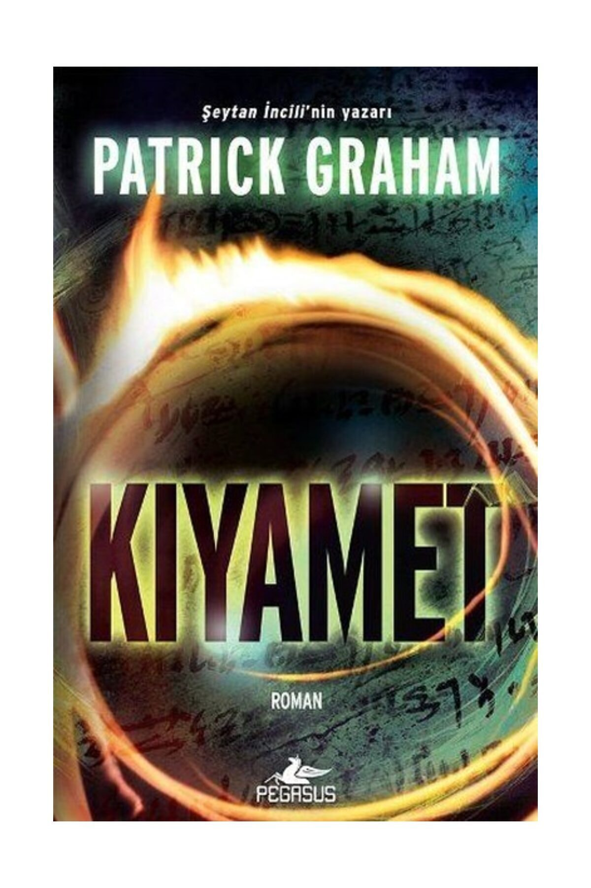

Kitap Hakkinda
Kiyamet
Açıklanamayan ölümler Harap olan mahalleler Kıyametin ayak izleri Artık her kapı yok oluşa açılıyor
Kasırga şehirde tüm gücüyle varlığını hissettirmektedir. İnsanlar bir yandan doğal afetlerle mücadele ederken kapalı kapılar ardında daha da önemli bir savaş verilmektedir: acıması olmayan, varlığı yaratılışa kadar uzanan bir düello... Dedektif Marie Parks bütün bu kaos içerisinde kendisine ulaşan yardım çığlığına kayıtsız kalamayacaktır. Ünlü arkeologların öldürülmesini araştıran Marie'nin, kariyerinin en hassas ve en özel soruşturmasını başarıyla yürütebilmesi için elinden gelen her şeyi yapması gerekecektir çünkü hem küçük bir kızın hem de tüm insanlığın geleceği onun, katilleri yakalama konusundaki yeteneğine bağlıdır.
“Patrick Graham okuyucuyu son satıra kadar diken üstünde tutuyor. Gerilim ile fantastik edebiyat arasında yarattığı evren harikulade.”
“Yüksek teknoloji, felaketler, dinî gizemler ve zekice bir kurgu… Graham, Amerikan tarzını ustaca uygulayan bir Fransız. Sonuç mükemmel.”
“İnsanın kanını donduran, bir çırpıda okunan bir roman.” Elle
“Hem ürkütücü hem de büyüleyici bir gerilim. Şaşırtıcı sonu hafızalardan silinmeyecek.” Le Point
Çevirmen: Hakan Tansel
Yayın Tarihi: 23.02.2017
Yayın Tarihi: 23.02.2017
ISBN: 9786052990810
Dil: TÜRKÇE
Sayfa Sayısı: 552